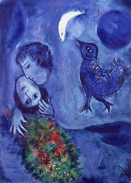

Ici nous allons parler d'art et plus précisement de la peinture, un art existant depuis la préhistoire et qui nous est parvenue en traversant l'Antiquité et le Moyen-Age.  Nous allons aborder deux sujets : Différents mouvements, Quelques artistes: Pablo Picasso, Frida Kahlo, Vasarely, Hokusai.